This tour starts from Jabalpur. We prefer to travel by train to Jabalpur and return from Indore to Pune. Since we didn't get a reservation from Pune, I booked a train to Jabalpur from Mumbai (CSMT). To Bombay from Pune, we came by Pragathi Express. We left home by 6:30 am. We reached Mumbai at 11:30 am and boarded the train to Jabalpur.
This train is called Garib Rath. All the coaches in this train are III AC sleepers. These trains were introduced in Indian Railways when Lalu Prasad ji was the Railway Minister. The journey was comfortable.
The train was at the right time. We arrived at Jabalpur station around 5:30 am. We didn't want to move out in the dark. We waited at the station until 6:30 am. Then we took an auto and reached Hotel Trio Max. This hotel is near the railway station.
As per the itinerary, the actual tour starts from tomorrow only. We didn't want to sit the whole day in the hotel. Around 9 am, we got ready and left the hotel. Nearby the hotel, we found Indian Coffee House, a decent vegetarian hotel. We took breakfast with filter coffee. From the hotel, we took an auto and reached the Jabalpur bus stand. From there, we took a bus to Bhedaghat, around 20 km away from the city. From the bus stop to reach Dhuandhar Waterfalls,
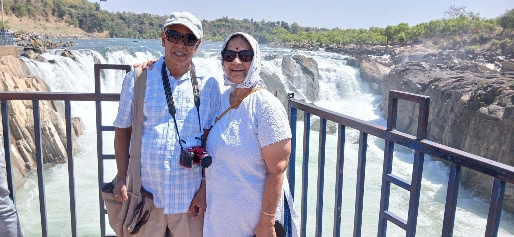
we had to walk about 200 steps down.The waterfall was wonderful. The river is Narmada. We spent an hour and took lots of photos. Also, a ropeway facility is there to view the waterfalls. After this visit, we reached back to the main road by climbing again 200 steps. From there, we took an auto to Beda Ghat,
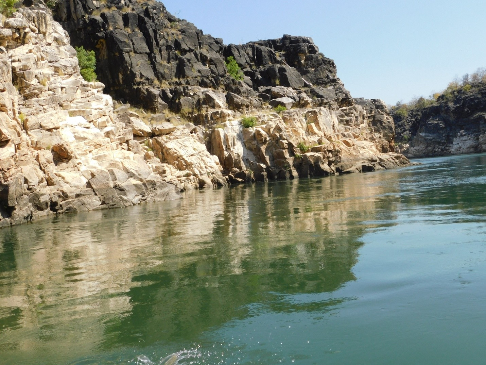
where boating arrangements are there. From the main road, we had to go down about 200 steps. Boating arrangement is in the Narmada River, and both sides are marble rocks of different colors—white, blue. It is an open boat and they take 20 passengers. Per head, they take Rs 100/-. Boat riding was about 30 minutes. Marble rocks of different shapes and lots of trees make that boat ride more pleasant.Boat riding was nice and the beautiful poetic description in Hindi about Bhedaghat by the boatman was entertaining. After the boat ride, we returned back to the main road, took a bus, and returned back to the hotel around 3:30 pm. Then we had our late lunch. Lunch was Rajasthani type. Dal Baati, different subjis, and kadhi were all tasty. After lunch, we preferred to take rest.
We left TrioMax Hotel, Jabalpur at 8 am after our breakfast. Pachmarhi is about 300 km from Jabalpur. Pachmarhi is on the way to Nagpur from Jabalpur. This highway road is good. This road goes through a few forest areas. In these areas, the highway road is fenced with wire mesh to prevent wild animals from entering.
We came up to Piparia on the highway, then took a narrow road to Pachmarhi. We took lunch around 1 pm in a normal hotel in Piparia. The ghat road starts after Piparia. In this ghat road, we traveled about 30 km. This is a forest road; at times, people traveling on this road see Bison. We didn't see any wild animals. Because of summer, the forest area was not green. Around 3:30 pm, we reached hotel Summer House.
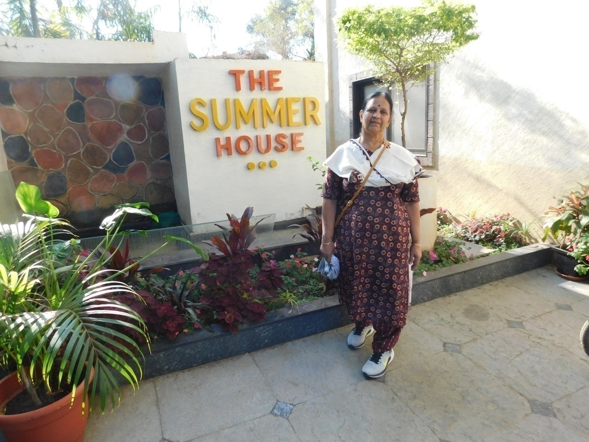
They welcomed us with aarthi. The room was good. Food was good. Since there is no program today, we just took rest.After breakfast, we left the hotel for sightseeing. First, we went to Pandav Caves. We went by a special open jeep.
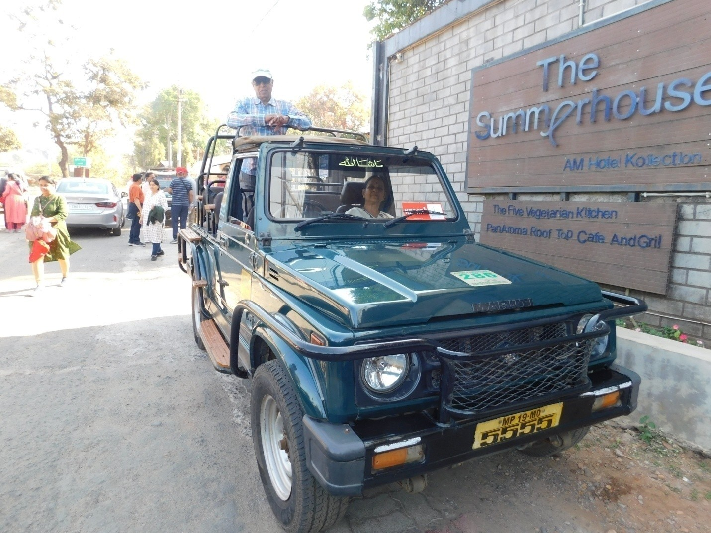
This is about a half-hour drive from the hotel. There are five caves over a hill. We have to climb 40 steps. Actually, we couldn't enter into the pandava caves.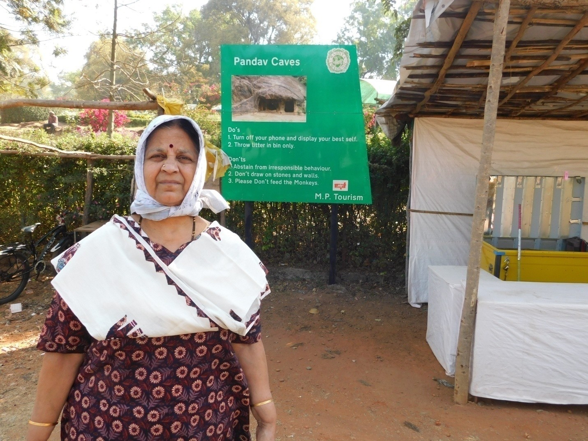
For safety purposes, all the caves were locked. There is no relevance between this place and the Mahabharata or Pandavas. Since five caves are there, these caves are named Pandava Caves.Next, we were taken to a place called Handikhoh. From this point, we can view the beautiful valley. Also, a binocular facility is there to view more clearly. Next point was Gupta Mahadev temple.
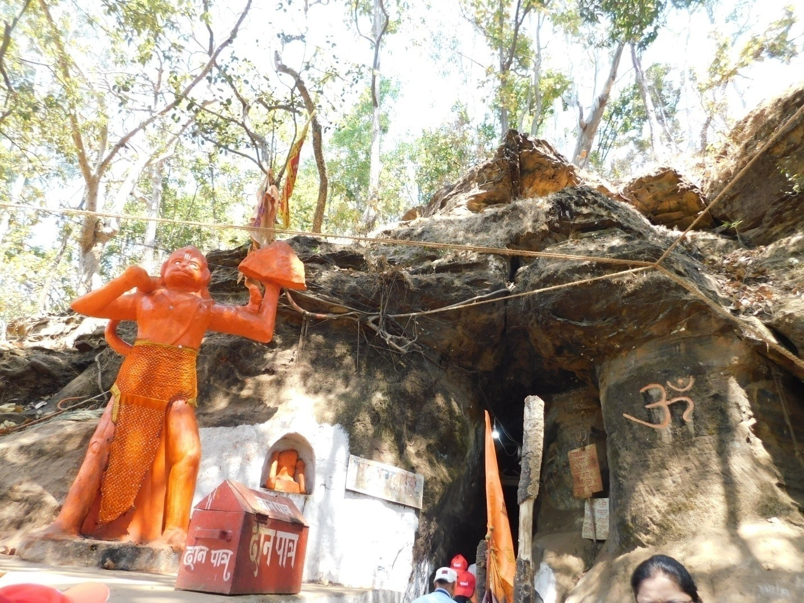
From the parking area, we had to walk some 500 meters. The main deity is Shiva. The deity is in a cave. Through a narrow way, we have to enter and walk about 20 meters into the cave. Since the 20-meter way is so narrow, we had to walk sideways. Since it is one way, only 5 people are allowed at a time. But there was not a big crowd.After the visit, we proceeded to bada Mahadev temple.
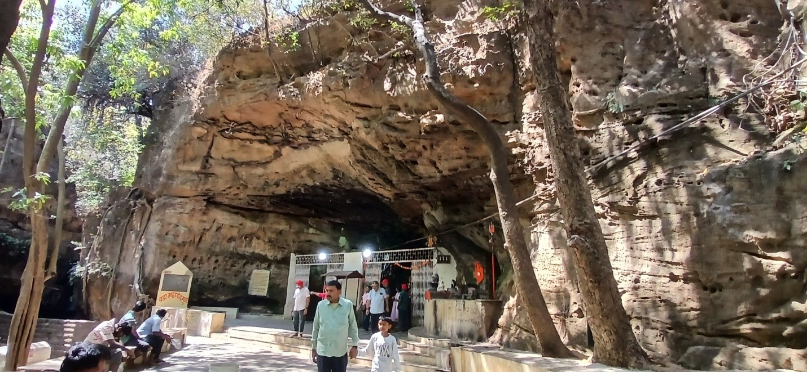
This is also inside a cave, but quite big. We can enter without any difficulty. Adjacent to this temple, another cave is there for Parvati Devi. Since it is difficult to climb, we paid our respect to the Devi from outside only. Then we returned back to the hotel and had our lunch. After a brief rest, again we proceeded in the jeep to see Jata Shankar Temple. This temple visit was really hectic and tiresome. After reaching the parking place, we have to walk one km. Then we went down 300 steps and entered a cave to pay respect to the Shiva deity. Inside the cave, water was dripping and the main deity Shiva was with a five-headed snake. This is a very old temple and belongs to the 4th century. After visiting this temple, we repeated the same exercise of 300 steps up and a 1 km walk.And our last spot of the day was the sun set point.
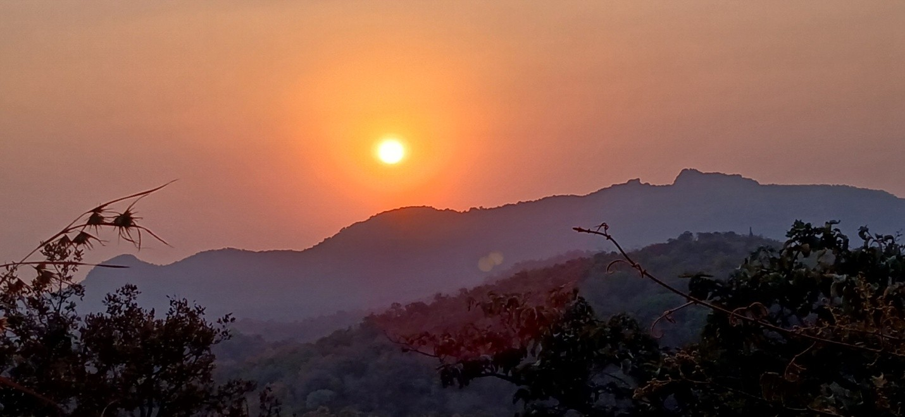
This sunset point is named after the first President, Dr. Rajendra Prasad. Reached there by jeep, saw the sunset, and returned back to the room. In the dinner menu, my favorite khichdi and kadhi pakoda were there. I took only that and went for an early sleep.After breakfast, we left Hotel Summer House, Pachmarhi for Bhopal. Bhopal is about 200 km away from Pachmarhi. On the way to Bhopal, 150 km from Pachmarhi, a beautiful place called Bhimbetka is here. Here over seven hills, 750 human shelters are there. This belongs to the Stone Age period. In the caves, we saw many paintings. The whole location is in the forest. This place would be under complete greenery. It is under UNESCO heritage.
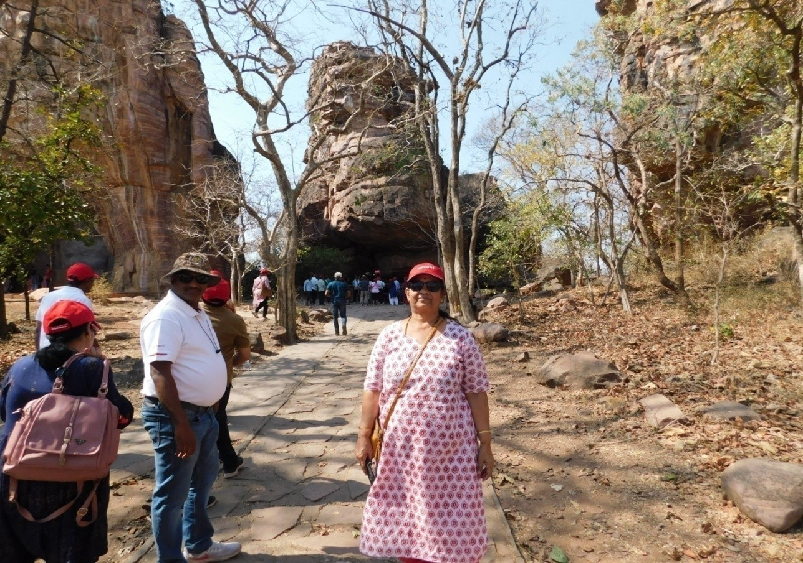
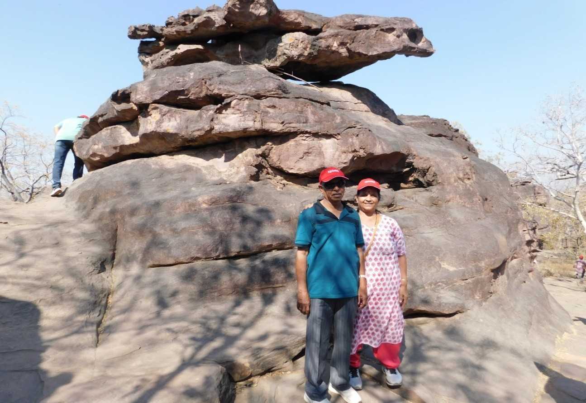
We spent an hour here. After visiting this place, we then proceeded to Bhojpur to see one very old Shiva temple which is incomplete. The name of this temple is Bhojeswar Mahadev temple.
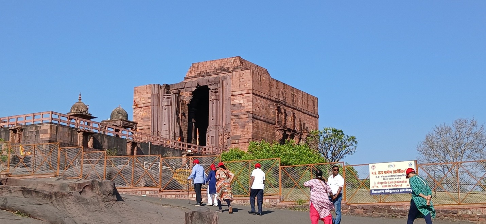
The main deity is Lord Shiva. It is 8 feet tall and the circumference is 17.5 feet. This was constructed by Bhoj Raj, a king of this place, in the 11th century, and the construction was not completed for unknown reasons. After this temple, we reached our hotel Golden Tulip, Bhopal. This hotel is also quite good.Today our plan is to visit the famous Sanchi. From Bhopal main city, Sanchi is about 40 km away. Before describing Sanchi, if we revise a little about Indian history, we may appreciate it more. Siddhartha Gautama Buddha's period was between 500 to 400 BCE. Much later, Ashoka the Great, the son of Bindusara, the last king of the Mauryan dynasty, ruled India. King Ashoka the Great's period was 268 to 232 BCE. Ashoka the Great ruled the entire India except a small southern portion. After the war of Kalinga, he embraced Buddhism and spent the remaining life in spreading Buddhism. This Sanchi was created during his period.
In Sanchi, the great Stupa,
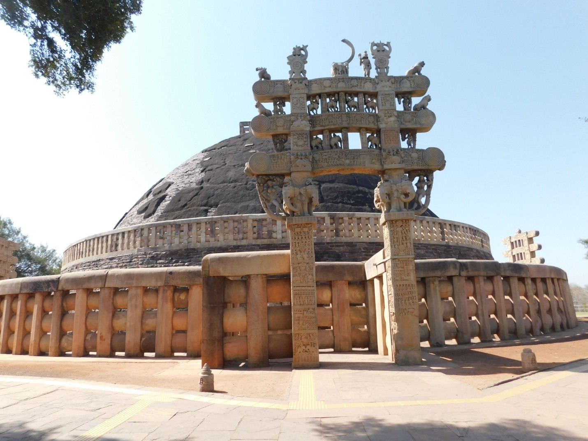
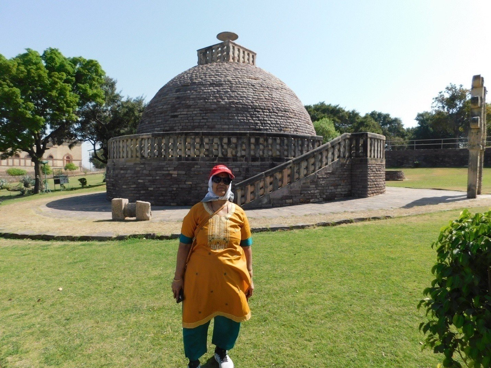
a structure of Mauryan architecture, is one of the important monuments in India. It is a hemispherical brick structure. The stupa was crowned by a special structure. The stupa's four entrances were decorated with elaborate gateways with beautiful carvings. This beautiful monument comes under UNESCO. Apart from the main stupa, smaller stupas and monasteries are seen in this complex. The smooth stone Ashoka Pillar is another main attraction in this complex. Though it is broken, all the broken pieces are preserved here. This monument's picture is embedded in the present Rs 200/- currency. After Sanchi, we returned back to the hotel.We left Golden Tulip Hotel, Bhopal after breakfast around 8 am. We proceeded to Ujjain. Ujjain is about 200 km from Bhopal. Close to the hotel, the famous artificial lake of Bhopal is there. Here, a statue of Bhoja Raj is there. Bhoja Raj is a Rajput king. Bhopal was created by him and this city was initially called Bhojpur. This artificial lake was also created by this king only. This lake is called the Upper Lake.
We reached Ujjain around 12:45. After our lunch, we proceeded to Kala Birav temple.
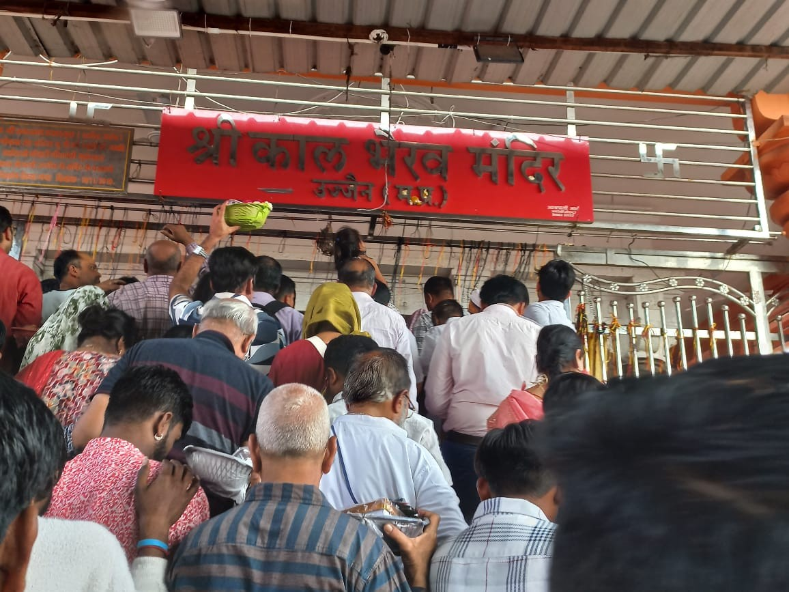
For this deity, country liquor is offered and the same is distributed as Prasad. Earlier, when I was working in Itarsi, we visited this temple. Because of the very hot weather and very long queue, I opted along with some others not to stand for hours together. I skipped this temple and stayed with some others in the restaurant where we took food. Most of the people, except around 10 like me, proceeded to this temple. In the hot sun, they stood about 3 hours, had darshan, and returned back. Lakshmi also did.Then we boarded the bus and proceeded to Mahakaleshwar Temple. This is one of the most popular Jyotirlinga shrines among the twelve. Since there was a heavy rush, we had to buy a ticket for Rs 250/- per head. So we didn't stand in the line for a long time. After paying respect to Mahakaleshwar, inside the same temple premises, we saw the other temples. Harsiddhi Mata Temple, one of the 52 Shaktipeeths, is close to Mahakaleshwar temple. That also we worshiped. Within the same premises, Lord Ganesha, Parvati Devi, Kartikeya, and Nagachandreshwar deities are also seen.
After completion, we came out of the mandir and moved to the Mahakal Corridor. The Mahakal Corridor is about a 1 km passage decorated with 108 beautiful carved pillars and 192 statues, mostly characters from the Mahabharata and Ramayana. We walked through this passage, reached the exit gate, took auto-rickshaws to the parking place, and boarded our bus. From this point, Indore is about 80 km. It took about 2 hours to reach the Lemon Tree Hotel. We reached the hotel around 10 pm and had our late dinner.
On 16th March 25, we visited Mandu. Mandu or Mandavgad is in the western part of Madhya Pradesh. It is about 100 km from Indore. Mandu initially was a guarded city and ruled by Rajputs until the 10th century. After the Mughal invasion, this place was ruled by different Sultans nominated by Mughal kings. Here, lots of ancient forts and temples are there.
Jahaz Mahal:
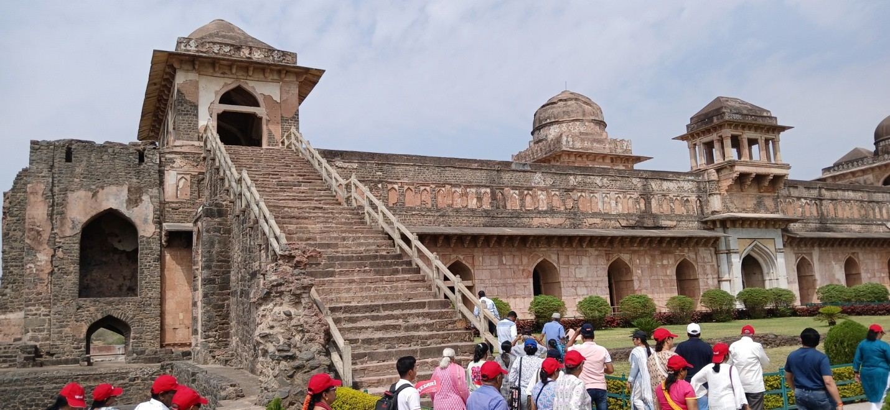
This is a beautiful Mahal constructed during the Khilji dynasty in the 15th century. This palace is well maintained with a beautiful garden. Then we went to visit Baz Bahadur Palace. It is an ancient palace of Mandu. This palace is situated on the hill slope to the east of Rewa Kund. As per the Persian inscription on the entrance arch, it was built in 1508 by Nasir-ud-Din, the Sultan of Malwa. Incidentally, Nasir-ud-Din Shah Khilji is credited with designing this aesthetic structure which underwent repairs and renovations during the period of Baz Bahadur. The King became fond of this palace because of his eternal romance with the accomplished singer Roopmati who used to visit the nearby Rewa Kund.After the palace, we visited Rani Roopmati pavilion.
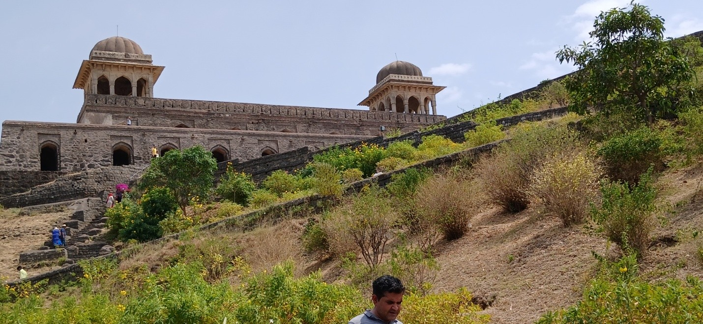
According to legend, Roopmati was a Hindu singer and shepherdess with whom Sultan Baz Bahadur, the Muslim ruler of Malwa, fell in love. She agreed to marry him and became the Queen of Malwa. Mughal Akbar decided to conquer Mandu and sent Adham Khan to capture Mandu. Adham Khan marched on the fort and defeated Baz Bahadur. As Adham Khan came to Mandu, he was surprised by the beauty of Roopmati. Rani Roopmati stoically poisoned herself to avoid capture, bringing an end to the love story. This palace was initially built for military purposes and later converted into a palace for Roopmati.Then we proceeded to the monument of Maharani Ahilyabai Holkar.
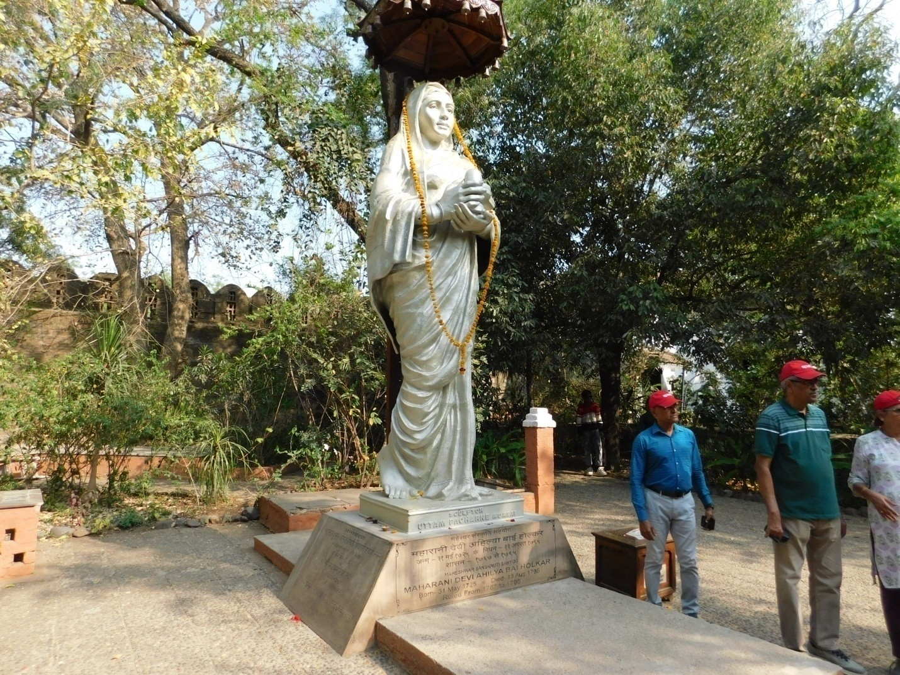
She became the Queen of Malwa after the demise of her husband. She was an excellent administrator and protected the people of Malwa from the invaders. She died in 1795. Also, the present Kashi Vishwanath temple was built by her during her rule. Then the Kesari group was given time for shopping, mainly to buy Maheshwari sarees. After the saree purchase, we proceeded to Indore and reached our hotel. Before dinner, we visited Chappan Dukan. These 56 shops are on a single street and they sell different types of snacks, ice creams, cold drinks, etc. These shops are open every day only from 7 o'clock in the evening and close by 10 pm.Today's agenda is to visit Omkareshwar Temple. After breakfast, we left the hotel around 8 am. Omkareshwar is 80 km away from Indore. The road is very, very bad and with lots and lots of speed breakers. The 2-hour and 30-minute journey was really a big torture. At last, we reached Omkareshwar around 11 am. From the parking place to the temple premises, about a 2 km distance, we went by rickshaw. Then we walked through the hanging bridge over Krishna river
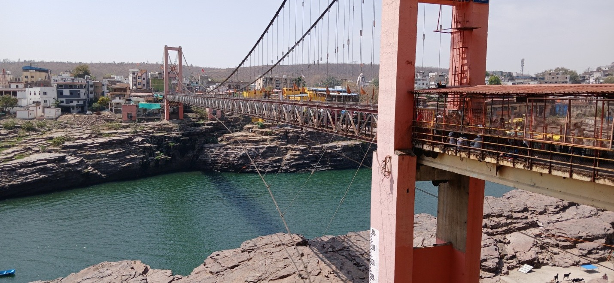
(mistakenly mentioned as Krishna river) and stood in the line. About two hours we stood in the line. Fortunately, proper shelter was provided to stand in instead of the hot sun.When we just reached the sanctum, the door was closed for 'Naivedyam' and we again waited for forty minutes. After that, we were allowed and we went so close to the main deity Omkareshwar and Parvati Devi. Some of our group people got stuck in the queue and we had to wait for them. Another 45 minutes we were waiting for them. At last, they also finished their worship. Before leaving the premises, in the same premises, one more deity called Mamleshwar (Lord Shiva) was worshiped, and we walked to the main road and took a rickshaw to the bus parking place. Boarded the bus and after a travel of 10 minutes, we took our lunch at 3:30 pm. Lunch was simple but good. Then continued our return journey. We reached the hotel around 7 pm.
Today according to the itinerary, the program is an Indore city tour. After breakfast at 10 am, we left the hotel. First, we visited a Jain Mandir. The specialty of this Jain temple is that the inside walls, roof, and floor are all made of mirrors. It looks very beautiful. Apart from mirrors, many silver decorations were attractive. Then we visited Lal Bagh Palace. It is a marble palace. Beautiful architecture and big chandeliers are pretty attractive. Then we went to the Central Museum. This describes the complete history of Indore. Then we returned back to the hotel. After lunch around 3 pm, we left the hotel and proceeded to the station. The train was at the right time.
Because of the very uncomfortable long bus journey, it was very tiresome. After reaching the room, I took some 15 minutes of rest. Since we leave this place tomorrow, we wanted to just see Chappan Dukan again. Took a rickshaw and went there, walked through that street, and came back to the hotel by taking another rickshaw.
Travel Summary
| Date | Place | Visits |
|---|---|---|
| 10/03/2025 | Jabalpur | Bhedaghat Boat ride, Dhuandhar Waterfalls |
| 12/03/2025 | Pachmarhi | Pandav Caves, Handikhoh, Gupta Mahadev Temple, Bada Mahadev Temple, Jatta Shankar Temple, Dr. Rajendra Prasad Sunset Point |
| 13/03/2025 | Bhimbetka & Bhojpur | Caves and Paintings, Incomplete Shiva Temple |
| 14/03/2025 | Sanchi | Monument of Buddhism created by King Ashoka the Great |
| 15/03/2025 | Bhopal & Ujjain | Upper Lake and Statue of Bhojraj, Kaal Bhairav Mandir, Mahakaleshwar Temple, Harsiddhi Mata Temple, Mahakal Corridor |
| 16/03/2025 | Mandu | Jahaz Mahal, Baz Bahadur’s Palace, Rani Roopmati Pavilion, Monument of Maharani Ahilyabai Holkar |
| 17/03/2025 | Omkareshwar | Omkareshwar Temple |
| 18/03/2025 | Indore | Jain Mandir, Lal Bagh Palace, Central Museum, Chappan Dukkan |
Journey Reflection
This 10-day expedition through Madhya Pradesh—the heart of India—was a remarkable journey through time. From the prehistoric cave paintings of Bhimbetka and the spiritual serenity of Sanchi to the architectural marvels of the Malwa Sultans in Mandu, every stop revealed a new layer of Indian heritage. Despite the physical challenges of temple climbs and long, bumpy bus rides, the spiritual fulfillment of visiting two Jyotirlingas (Mahakaleshwar and Omkareshwar) and the natural beauty of the Narmada River made this trip a deeply enriching chapter in our travel experiences. We return with hearts full of memories and a deeper appreciation for the resilient history of this great land.